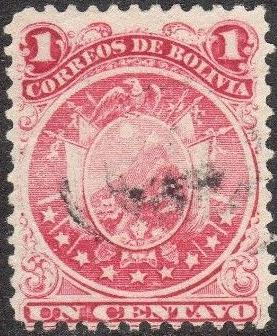
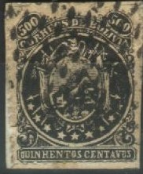
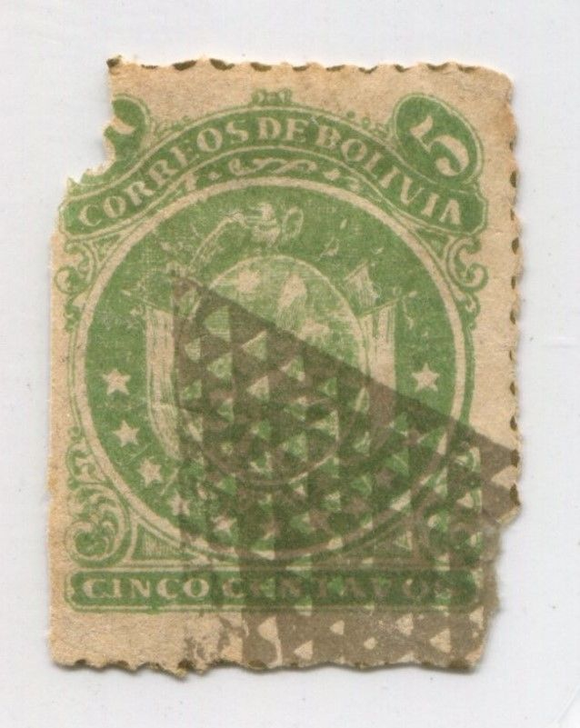
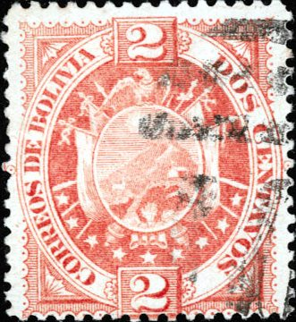

Return To Catalogue - Bolivia 1867 issue - Bolivia 1897-1920
Note: on my website many of the
pictures can not be seen! They are of course present in the
catalogue;
contact me if you want to purchase it.
With 9 stars in the design
1 c red 2 c violet 5 c green 5 c blue 10 c red 10 c orange 10 c yellow 20 c green 50 c blue 50 c red 100 c orange 100 c yellow 500 c black With 11 stars in the design


1 c red 2 c violet 5 c green 5 c blue 10 c red 10 c orange 50 c blue 100 c orange 500 c black
For the specialist: these stamps were first issued with perforation 12. The type with 11 stars was also issued with rouletted perforation in 1887. A few values (1 c red, 2 c violet, 5 c blue, 10 c yellow and 20 c green) were issued lithographed with perforation 11.

Lithographed stamps
Value of the stamps |
|||
vc = very common c = common * = not so common ** = uncommon |
*** = very uncommon R = rare RR = very rare RRR = extremely rare |
||
| Value | Unused | Used | Remarks |
| 9 Stars | |||
| 1 c | * | * | Lithographed: ** |
| 2 c | *** | ** | Lithographed: * |
| 5 c green | *** | *** | |
| 5 c blue | * | * | |
| 10 c red | *** | *** | |
| 10 c orange | *** | * | |
| 10 c yellow | *** | * | Perf 11, lithographed |
| 20 c green | *** | ** | Lithographed: *** |
| 50 c blue | *** | *** | |
| 50 c red | *** | ** | |
| 100 c orange | R | R | |
| 100 c yellow | R | *** | |
| 500 c | RRR | RRR | |
| 11 Stars | |||
| 1 c | * | * | Rouletted |
| 2 c | * | * | Rouletted |
| 5 c green | * | * | |
| 5 c blue | * | * | Perf 11, lithographed |
| 5 c blue | *** | * | Rouletted |
| 10 c red | *** | *** | |
| 10 c orange | *** | * | Rouletted |
| 50 c blue | *** | *** | |
| 100 c orange | *** | *** | |
| 500 c | RRR | RRR | |
Forgeries, examples:

These forgeries can be recognized by the fact that the background in the circle is plain, instead of consisting of horizontal lines as in the genuine stamps. The 500 c stamps have inscription 'QUINHENTOS' instead of 'QUINIENTOS', the 'Q' of this word is very squeezed.
The forgeries above have typical forgers cancels (this cancel was never used in Bolivia). They were made by Spiro. The inscription of the 50 c forgery reads 'CINCOENTA' instead of 'CINCUENTA'.

Forgery, probably a cut from some kind of souvenir card.

Another forgery of the 1 c value in the wrong color grey.

Forgery of the 10 c red with printed perforation.

A forgery made by the famous forger Sperati, I don't know the
distinguishing characteristics of this forgery.
I've also seen another forgery of the 10 c and 50 c with only one mountain peak and the numbers '50' different (sorry, no image available yet).

5 c blue 10 c orange 20 c green 50 c red
These stamps have perforation 12.
Value of the stamps |
|||
vc = very common c = common * = not so common ** = uncommon |
*** = very uncommon R = rare RR = very rare RRR = extremely rare |
||
| Value | Unused | Used | Remarks |
| 1 c | *** | ** | |
| 10 c | *** | * | |
| 20 c | *** | * | |
| 50 c | RR | *** | |
(reduced views)

1 c yellow 2 c red 5 c green 10 c brown 20 c blue 50 c lilac 100 c red
These stamps have perforation 14.
Value of the stamps |
|||
vc = very common c = common * = not so common ** = uncommon |
*** = very uncommon R = rare RR = very rare RRR = extremely rare |
||
| Value | Unused | Used | Remarks |
| 1 c | * | ** | |
| 2 c | * | * | |
| 5 c | * | * | |
| 10 c | * | * | |
| 20 c | ** | ** | |
| 50 c | *** | *** | |
| 100 c | *** | *** | |

With "FAUX" overprint

(Reprints with forged cancels)
Many of these stamps are reprints (exists also with cancellation). Among them a 'misprint': 10 c blue. These reprints have other perforations 13 1/2 or 13, while genuine stamps are printed with perforation 14 or 14 1/2. They are also printed on thicker paper (Paris unauthorized reprints?). I've seen whole sheets of 100 stamps (10x10) with forged cancels of these reprints.
Overprinted 'E.F. 1899' in a rectangle (1898) (used in north Bolivia during the civil war)
(Genuine overprint)
1 c yellow 2 c red 5 c green 10 c brown 20 c blue 50 c lilac (not officially issued!) 100 c red (not officially issued!)
Value of the stamps |
|||
vc = very common c = common * = not so common ** = uncommon |
*** = very uncommon R = rare RR = very rare RRR = extremely rare |
||
| Value | Unused | Used | Remarks |
| 1 c | R | R | |
| 2 c | R | R | |
| 5 c | *** | *** | |
| 10 c | *** | *** | |
| 20 c | R | R | |
| 50 c | ? | ? | |
| 100 c | ? | ? | |
The overprint 'EF' stands for 'Estado Federal'.
Many forged overprints exist. Examples:


The forger Fournier offers the values 1 to 20 c (5 stamps) in his 1914 pricelist for 2 Swiss Francs. I don't posess a picture of such a forgery, but the next image shows an imprint of the forged 'E.F.1899' overprint as found in the Fournier Album of Philatelic Forgeries (which was distributed after Fournier died as a guide to detect Fournier forgeries):
Some forged Fournier cancels of Bolivia (the 'BOLIVIA' in a box
cancel was used on forged 2 B 1897 stamps) and the forged
'E.F.1899' overprint as found in the Fournier Album of Philatelic
Forgeries.
The forger Bela Szekula made fraudulent printings of this issue, I have no further information.
Postal stationery in the same design ('TARJETA POSTAL'):
(2 c blue on lilac)
In The Philatelic Record of September 1901, page
210, the following text on forged 'E.F. 1899' overprints can be
found:
Forged Bolivia. " We have only recently found out that
we have been selling forgeries of the Bolivian stamps of 1894,
surcharged 'EF. 1899.' say Messrs - Stanley Gibbons in the
Monthly Journal for July. And they forthwith offer to refund the
money paid for these forgeries. And as to the history of these
forgeries : They had them from " our friend Mr. E.
Gainsborg, of Paris, who had them from a party in Bolivia, whom
he believed to be quite reliable," and whose name should, we
suggest, have been given pro bono publico. The original
disseminator of forgeries cannot be too boldly placarded. If we
would only put heads together, and in every case hunt up and
expose the original source, we should do much to protect all
concerned in the uprooting of Philatelic weeds, and the
punishment of Philatelicrogues.
For stamps of Bolivia from the period 1897-1920 click here.


{kind=link}
{kind=link}
{kind=link}
{kind=link}
{kind=link}